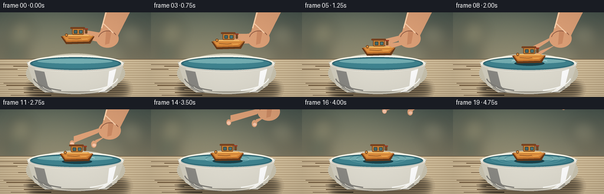
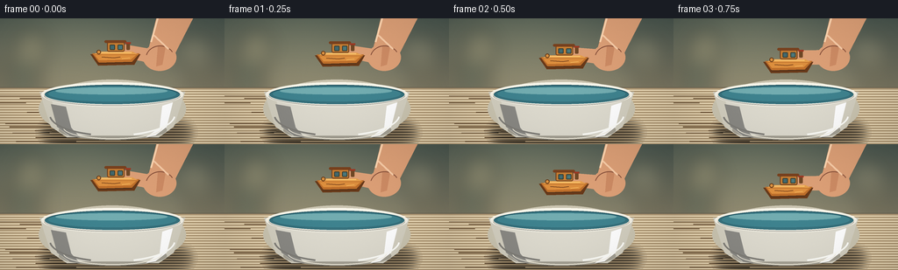

CODING AGENTS AS PIXEL WORLD MODELS
traex/GPT-5.6-Sol · mechanics_0010
点击播放 · 原生 RGB 像素
逐轮保存的候选
回放视频、检查图与代码变化。
每份候选均可单独播放。实际图片检查记录在下方工具轨迹中。
候选 01播放与检查图
点击播放 · 原生 RGB 像素

展开代码变化
--- 上一保存版本
+++ 本次保存版本
@@ -0,0 +1,197 @@
+from pathlib import Path
+import math
+import numpy as np
+from PIL import Image, ImageDraw, ImageFilter
+import artifact_io
+
+W,H,N,SS = 256,144,20,4
+CW,CH=W*SS,H*SS
+rng=np.random.default_rng(17)
+
+def sc(v): return int(round(v*SS))
+def box(b): return tuple(sc(v) for v in b)
+def pts(p): return [(sc(x),sc(y)) for x,y in p]
+def smooth(x):
+ x=max(0,min(1,x)); return x*x*(3-2*x)
+
+def ellipse(d,b,fill,outline=None,width=1): d.ellipse(box(b),fill=fill,outline=outline,width=sc(width))
+def line(d,p,fill,width=1,joint='curve'): d.line(pts(p),fill=fill,width=sc(width),joint=joint)
+def polygon(d,p,fill): d.polygon(pts(p),fill=fill)
+def rounded(d,b,r,fill,outline=None,width=1): d.rounded_rectangle(box(b),radius=sc(r),fill=fill,outline=outline,width=sc(width))
+def arc(d,b,a0,a1,fill,width=1): d.arc(box(b),a0,a1,fill=fill,width=sc(width))
+
+def base_scene():
+ yy,xx=np.mgrid[0:CH,0:CW]
+ # warm, softly illuminated kitchen/studio background
+ top=np.array([72,85,78.],float); bot=np.array([176,158,125.],float)
+ u=(yy/(CH-1))[...,None]
+ arr=top*(1-u)+bot*u
+ glow=np.exp(-(((xx-CW*.31)/(CW*.43))**2+((yy-CH*.18)/(CH*.55))**2))*26
+ arr=np.clip(arr+glow[...,None]*np.array([1,.86,.57]),0,255)
+ im=Image.fromarray(arr.astype(np.uint8),'RGB')
+ # defocused background shapes
+ blur=Image.new('RGBA',(CW,CH),(0,0,0,0)); d=ImageDraw.Draw(blur)
+ ellipse(d,(15,12,55,55),(218,196,143,45)); ellipse(d,(199,17,246,57),(233,214,169,38))
+ rounded(d,(5,46,46,97),5,(49,68,61,75)); rounded(d,(215,50,251,95),7,(82,77,58,45))
+ blur=blur.filter(ImageFilter.GaussianBlur(sc(10))); im=Image.alpha_composite(im.convert('RGBA'),blur)
+ # tabletop, with subtle vignette
+ d=ImageDraw.Draw(im,'RGBA')
+ polygon(d,[(0,79),(256,79),(256,144),(0,144)],(180,157,121,255))
+ line(d,[(0,79),(256,79)],(110,102,83,90),1)
+ for y in range(82,145,3):
+ a=max(0,18-(y-82)//5); line(d,[(0,y),(256,y)],(255,239,204,a),1)
+ # fine wood grain
+ for k in range(14):
+ y=88+k*4+rng.uniform(-1,1)
+ x=rng.uniform(-20,90)
+ line(d,[(x,y),(x+rng.uniform(30,100),y+rng.uniform(-.6,.6))],(100,75,48,13),1)
+ return im
+
+BASE=base_scene()
+
+def draw_bowl_back(im):
+ d=ImageDraw.Draw(im,'RGBA')
+ # cast shadow
+ sh=Image.new('RGBA',(CW,CH),(0,0,0,0)); sd=ImageDraw.Draw(sh,'RGBA')
+ ellipse(sd,(53,119,213,141),(45,37,26,105)); sh=sh.filter(ImageFilter.GaussianBlur(sc(6)))
+ im.alpha_composite(sh)
+ d=ImageDraw.Draw(im,'RGBA')
+ # ceramic body silhouette and soft shaded lower half
+ ellipse(d,(44,70,212,137),(203,197,177,255))
+ polygon(d,[(45,84),(211,84),(198,124),(181,136),(76,136),(58,124)],(211,207,192,255))
+ ellipse(d,(67,116,190,139),(164,160,147,255))
+ polygon(d,[(58,87),(198,87),(190,124),(177,134),(78,134),(65,124)],(222,219,207,255))
+ # side shadows and reflected light
+ ellipse(d,(47,73,209,101),(231,226,211,255))
+ ellipse(d,(51,76,205,98),(54,113,125,255)) # water
+ ellipse(d,(55,78,201,95),(63,131,143,255))
+ ellipse(d,(63,79,191,87),(115,173,177,70))
+ arc(d,(47,73,209,101),180,359,(250,247,235,255),3)
+ arc(d,(51,76,205,98),185,355,(31,83,97,190),1)
+ # bowl side shading overlays
+ polygon(d,[(58,98),(65,124),(79,134),(91,136),(81,125),(75,101)],(138,137,132,44))
+ polygon(d,[(197,96),(190,124),(177,134),(166,136),(182,125),(185,100)],(255,255,255,35))
+ arc(d,(72,112,185,138),2,178,(246,241,224,120),1)
+
+def water_mask():
+ m=Image.new('L',(CW,CH),0); md=ImageDraw.Draw(m)
+ md.ellipse(box((52,76,204,99)),fill=255)
+ return m
+WMASK=water_mask()
+
+def draw_ripples(im, f, bx):
+ if f<8:return
+ elapsed=f-8
+ layer=Image.new('RGBA',(CW,CH),(0,0,0,0)); d=ImageDraw.Draw(layer,'RGBA')
+ # several expanding, fading water rings in perspective
+ for j in range(3):
+ age=elapsed-j*2.1
+ if age<=0: continue
+ rad=5+age*5.4
+ alpha=int(max(0,125-age*7))
+ b=(bx-rad,84-rad*.18,bx+rad,84+rad*.18)
+ arc(d,b,8,172,(191,231,229,alpha),1)
+ arc(d,b,188,350,(25,85,101,int(alpha*.7)),1)
+ # tiny contact dimples near the hull
+ if 8<=f<=11:
+ arc(d,(bx-30,81,bx-15,86),195,345,(220,242,236,130),1)
+ arc(d,(bx+14,81,bx+31,86),195,345,(220,242,236,130),1)
+ clipped=Image.new('RGBA',(CW,CH),(0,0,0,0)); clipped.paste(layer,(0,0),WMASK)
+ im.alpha_composite(clipped)
+
+def draw_hand(im, f, bx, by):
+ # hand follows toy while lowering, then opens and retreats upward/right
+ if f<=9:
+ retreat=0.0
+ else:
+ retreat=smooth((f-9)/9)
+ ox=retreat*30; oy=-retreat*70
+ alpha=int(255*max(0,min(1,(20-f)/4))) if f>=16 else 255
+ if alpha<=0:return
+ d=ImageDraw.Draw(im,'RGBA')
+ skin=(221,160,119,alpha); light=(244,190,148,alpha); shade=(174,110,79,alpha); nail=(246,198,171,alpha)
+ # angled forearm and palm
+ polygon(d,[(181+ox,-12+oy),(225+ox,-10+oy),(199+ox,41+oy),(184+ox,55+oy),(165+ox,49+oy),(172+ox,25+oy)],skin)
+ ellipse(d,(163+ox,29+oy,201+ox,60+oy),skin)
+ # thumb reaches down on right side of cabin; opens after release
+ opening=smooth((f-9)/3) if f>9 else 0
+ tx=bx+11+ox+opening*13; ty=by-11+oy-opening*9
+ polygon(d,[(186+ox,42+oy),(195+ox,47+oy),(tx+7,ty-2),(tx+6,ty+8),(tx,ty+9),(177+ox,53+oy)],skin)
+ ellipse(d,(tx,ty-1,tx+9,ty+11),skin)
+ # index finger descends on left side of toy, curls while gripping
+ ix=bx-7+ox-opening*12; iy=by-16+oy-opening*11
+ polygon(d,[(169+ox,38+oy),(179+ox,36+oy),(ix+7,iy-2),(ix+7,iy+12),(ix,iy+12),(162+ox,49+oy)],skin)
+ ellipse(d,(ix,iy+5,ix+8,iy+15),skin)
+ # middle finger silhouette behind
+ polygon(d,[(180+ox,31+oy),(189+ox,31+oy),(185+ox,53+oy),(178+ox,55+oy)],(205,139,100,alpha))
+ # palm lighting and contour
+ arc(d,(166+ox,31+oy,199+ox,60+oy),195,330,(133,79,58,int(alpha*.55)),1)
+ line(d,[(174+ox,18+oy),(192+ox,35+oy)],(249,205,168,int(alpha*.32)),2)
+ ellipse(d,(ix+1,iy+8,ix+7,iy+14),nail)
+ ellipse(d,(tx+2,ty+4,tx+8,ty+9),nail)
+ line(d,[(181+ox,-5+oy),(172+ox,27+oy)],(255,214,176,int(alpha*.3)),2)
+
+def draw_boat(im, f, bx, by):
+ d=ImageDraw.Draw(im,'RGBA')
+ # faint contact shadow/reflection once at water
+ if f>=8:
+ ellipse(d,(bx-25,by+4,bx+26,by+12),(24,65,74,80))
+ # little wooden tugboat: chunky, instantly toy-like
+ # dark underside and hull
+ polygon(d,[(bx-29,by-5),(bx+28,by-5),(bx+21,by+7),(bx-20,by+8)],(104,57,25,255))
+ polygon(d,[(bx-27,by-6),(bx+27,by-6),(bx+18,by+4),(bx-19,by+5)],(190,111,43,255))
+ polygon(d,[(bx-24,by-4),(bx+23,by-4),(bx+17,by+1),(bx-19,by+2)],(221,143,62,255))
+ line(d,[(bx-20,by+5),(bx+18,by+4)],(72,46,27,255),1)
+ # bow top / deck
+ polygon(d,[(bx-19,by-8),(bx+19,by-8),(bx+25,by-5),(bx-25,by-5)],(230,159,75,255))
+ # cabin block and roof
+ rounded(d,(bx-10,by-19,bx+10,by-8),2,(198,126,52,255),(109,63,30,255),1)
+ rounded(d,(bx-13,by-21,bx+12,by-18),1.5,(121,66,31,255))
+ # two blue windows
+ rounded(d,(bx-7,by-16,bx-1,by-10),1,(65,106,111,255),(54,64,56,255),1)
+ rounded(d,(bx+2,by-16,bx+8,by-10),1,(75,120,123,255),(54,64,56,255),1)
+ # tiny smokestack and red cap
+ rounded(d,(bx+12,by-18,bx+16,by-10),1,(112,72,38,255))
+ line(d,[(bx+11,by-18),(bx+17,by-18)],(159,57,36,255),2)
+ # wood grain and highlights
+ line(d,[(bx-16,by-2),(bx-2,by-1),(bx+5,by-2)],(119,67,30,150),1)
+ line(d,[(bx+7,by),(bx+16,by-1)],(244,181,92,180),1)
+ line(d,[(bx-18,by-7),(bx+18,by-7)],(255,205,120,170),1)
+ # round toy peg at bow
+ ellipse(d,(bx-22,by-10,bx-17,by-5),(218,145,65,255),(104,62,28,255),1)
+
+def draw_foreground_bowl(im):
+ d=ImageDraw.Draw(im,'RGBA')
+ # crisp front lip defines bowl and waterline
+ arc(d,(47,73,209,101),2,178,(246,243,231,255),3)
+ arc(d,(50,76,206,100),3,177,(171,170,162,230),1)
+ # ceramic glints
+ arc(d,(56,86,200,135),5,70,(255,255,250,90),2)
+ arc(d,(56,86,200,135),110,174,(128,126,120,65),2)
+
+def frame(f):
+ im=BASE.copy()
+ draw_bowl_back(im)
+ # descent ends frame 9; small physical bob after contact
+ if f<=9:
+ q=smooth(f/9); bx=132-3*q; by=46+34*q
+ else:
+ bx=129 + 1.4*math.sin((f-9)*.55)*math.exp(-(f-9)/9)
+ by=80 + 1.5*math.sin((f-9)*1.18)*math.exp(-(f-9)/5)
+ draw_ripples(im,f,bx)
+ draw_hand(im,f,bx,by)
+ draw_boat(im,f,bx,by)
+ draw_foreground_bowl(im)
+ # warm cinematic vignette and tiny film texture
+ arr=np.asarray(im.convert('RGB')).astype(np.float32)
+ yy,xx=np.mgrid[0:CH,0:CW]
+ dist=((xx-CW/2)/(CW*.72))**2+((yy-CH*.48)/(CH*.9))**2
+ arr*=np.clip(1-.16*dist[...,None],.78,1)
+ noise=np.random.default_rng(100+f).normal(0,.8,arr.shape[:2])[...,None]
+ arr=np.clip(arr+noise,0,255).astype(np.uint8)
+ return np.asarray(Image.fromarray(arr).resize((W,H),Image.Resampling.LANCZOS))
+
+frames=np.stack([frame(i) for i in range(N)]).astype(np.uint8)
+assert frames.shape==(20,144,256,3)
+artifact_io.save(frames,Path(__file__).resolve().parent)
+print('saved',frames.shape,frames.dtype)
可观测工具轨迹
实际执行的命令与返回图片。
命令 1exit 0
/bin/bash -lc "cat prompt.txt && printf '\\n---RULES---\\n' && cat GENERATION_RULES.md && printf '\\n---SPEC---\\n' && cat task_spec.json"
命令 2exit 0
/bin/bash -lc "find . -maxdepth 2 -type f -printf '%p %s bytes\\n' | sort"
命令 3exit 0
/bin/bash -lc "sed -n '1,240p' artifact_io.py"
命令 4exit 0
/bin/bash -lc "cat > generate.py <<'PY'
from pathlib import Path
import math
import numpy as np
from PIL import Image, ImageDraw, ImageFilter
import artifact_io
W,H,N,SS = 256,144,20,4
CW,CH=W*SS,H*SS
rng=np.random.default_rng(17)
def sc(v): return int(round(v*SS))
def box(b): return tuple(sc(v) for v in b)
def pts(p): return [(sc(x),sc(y)) for x,y in p]
def smooth(x):
x=max(0,min(1,x)); return x*x*(3-2*x)
def ellipse(d,b,fill,outline=None,width=1): d.ellipse(box(b),fill=fill,outline=outline,width=sc(width))
def line(d,p,fill,width=1,joint='curve'): d.line(pts(p),fill=fill,width=sc(width),joint=joint)
def polygon(d,p,fill): d.polygon(pts(p),fill=fill)
def rounded(d,b,r,fill,outline=None,width=1): d.rounded_rectangle(box(b),radius=sc(r),fill=fill,outline=outline,width=sc(width))
def arc(d,b,a0,a1,fill,width=1): d.arc(box(b),a0,a1,fill=fill,width=sc(width))
def base_scene():
yy,xx=np.mgrid[0:CH,0:CW]
# warm, softly illuminated kitchen/studio background
top=np.array([72,85,78.],float); bot=np.array([176,158,125.],float)
u=(yy/(CH-1))[...,None]
arr=top*(1-u)+bot*u
glow=np.exp(-(((xx-CW*.31)/(CW*.43))**2+((yy-CH*.18)/(CH*.55))**2))*26
arr=np.clip(arr+glow[...,None]*np.array([1,.86,.57]),0,255)
im=Image.fromarray(arr.astype(np.uint8),'RGB')
# defocused background shapes
blur=Image.new('RGBA',(CW,CH),(0,0,0,0)); d=ImageDraw.Draw(blur)
ellipse(d,(15,12,55,55),(218,196,143,45)); ellipse(d,(199,17,246,57),(233,214,169,38))
rounded(d,(5,46,46,97),5,(49,68,61,75)); rounded(d,(215,50,251,95),7,(82,77,58,45))
blur=blur.filter(ImageFilter.GaussianBlur(sc(10))); im=Image.alpha_composite(im.convert('RGBA'),blur)
# tabletop, with subtle vignette
d=ImageDraw.Draw(im,'RGBA')
polygon(d,[(0,79),(256,79),(256,144),(0,144)],(180,157,121,255))
line(d,[(0,79),(256,79)],(110,102,83,90),1)
for y in range(82,145,3):
a=max(0,18-(y-82)//5); line(d,[(0,y),(256,y)],(255,239,204,a),1)
# fine wood grain
for k in range(14):
y=88+k*4+rng.uniform(-1,1)
x=rng.uniform(-20,90)
line(d,[(x,y),(x+rng.uniform(30,100),y+rng.uniform(-.6,.6))],(100,75,48,13),1)
return im
BASE=base_scene()
def draw_bowl_back(im):
d=ImageDraw.Draw(im,'RGBA')
# cast shadow
sh=Image.new('RGBA',(CW,CH),(0,0,0,0)); sd=ImageDraw.Draw(sh,'RGBA')
ellipse(sd,(53,119,213,141),(45,37,26,105)); sh=sh.filter(ImageFilter.GaussianBlur(sc(6)))
im.alpha_composite(sh)
d=ImageDraw.Draw(im,'RGBA')
# ceramic body silhouette and soft shaded lower half
ellipse(d,(44,70,212,137),(203,197,177,255))
polygon(d,[(45,84),(211,84),(198,124),(181,136),(76,136),(58,124)],(211,207,192,255))
ellipse(d,(67,116,190,139),(164,160,147,255))
polygon(d,[(58,87),(198,87),(190,124),(177,134),(78,134),(65,124)],(222,219,207,255))
# side shadows and reflected light
ellipse(d,(47,73,209,101),(231,226,211,255))
ellipse(d,(51,76,205,98),(54,113,125,255)) # water
ellipse(d,(55,78,201,95),(63,131,143,255))
ellipse(d,(63,79,191,87),(115,173,177,70))
arc(d,(47,73,209,101),180,359,(250,247,235,255),3)
arc(d,(51,76,205,98),185,355,(31,83,97,190),1)
# bowl side shading overlays
polygon(d,[(58,98),(65,124),(79,134),(91,136),(81,125),(75,101)],(138,137,132,44))
polygon(d,[(197,96),(190,124),(177,134),(166,136),(182,125),(185,100)],(255,255,255,35))
arc(d,(72,112,185,138),2,178,(246,241,224,120),1)
def water_mask():
m=Image.new('L',(CW,CH),0); md=ImageDraw.Draw(m)
md.ellipse(box((52,76,204,99)),fill=255)
return m
WMASK=water_mask()
def draw_ripples(im, f, bx):
if f<8:return
elapsed=f-8
layer=Image.new('RGBA',(CW,CH),(0,0,0,0)); d=ImageDraw.Draw(layer,'RGBA')
# several expanding, fading water rings in perspective
for j in range(3):
age=elapsed-j*2.1
if age<=0: continue
rad=5+age*5.4
alpha=int(max(0,125-age*7))
b=(bx-rad,84-rad*.18,bx+rad,84+rad*.18)
arc(d,b,8,172,(191,231,229,alpha),1)
arc(d,b,188,350,(25,85,101,int(alpha*.7)),1)
# tiny contact dimples near the hull
if 8<=f<=11:
arc(d,(bx-30,81,bx-15,86),195,345,(220,242,236,130),1)
arc(d,(bx+14,81,bx+31,86),195,345,(220,242,236,130),1)
clipped=Image.new('RGBA',(CW,CH),(0,0,0,0)); clipped.paste(layer,(0,0),WMASK)
im.alpha_composite(clipped)
def draw_hand(im, f, bx, by):
# hand follows toy while lowering, then opens and retreats upward/right
if f<=9:
retreat=0.0
else:
retreat=smooth((f-9)/9)
ox=retreat*30; oy=-retreat*70
alpha=int(255*max(0,min(1,(20-f)/4))) if f>=16 else 255
if alpha<=0:return
d=ImageDraw.Draw(im,'RGBA')
skin=(221,160,119,alpha); light=(244,190,148,alpha); shade=(174,110,79,alpha); nail=(246,198,171,alpha)
# angled forearm and palm
polygon(d,[(181+ox,-12+oy),(225+ox,-10+oy),(199+ox,41+oy),(184+ox,55+oy),(165+ox,49+oy),(172+ox,25+oy)],skin)
ellipse(d,(163+ox,29+oy,201+ox,60+oy),skin)
# thumb reaches down on right side of cabin; opens after release
opening=smooth((f-9)/3) if f>9 else 0
tx=bx+11+ox+opening*13; ty=by-11+oy-opening*9
polygon(d,[(186+ox,42+oy),(195+ox,47+oy),(tx+7,ty-2),(tx+6,ty+8),(tx,ty+9),(177+ox,53+oy)],skin)
ellipse(d,(tx,ty-1,tx+9,ty+11),skin)
# index finger descends on left side of toy, curls while gripping
ix=bx-7+ox-opening*12; iy=by-16+oy-opening*11
polygon(d,[(169+ox,38+oy),(179+ox,36+oy),(ix+7,iy-2),(ix+7,iy+12),(ix,iy+12),(162+ox,49+oy)],skin)
ellipse(d,(ix,iy+5,ix+8,iy+15),skin)
# middle finger silhouette behind
polygon(d,[(180+ox,31+oy),(189+ox,31+oy),(185+ox,53+oy),(178+ox,55+oy)],(205,139,100,alpha))
# palm lighting and contour
arc(d,(166+ox,31+oy,199+ox,60+oy),195,330,(133,79,58,int(alpha*.55)),1)
line(d,[(174+ox,18+oy),(192+ox,35+oy)],(249,205,168,int(alpha*.32)),2)
ellipse(d,(ix+1,iy+8,ix+7,iy+14),nail)
ellipse(d,(tx+2,ty+4,tx+8,ty+9),nail)
line(d,[(181+ox,-5+oy),(172+ox,27+oy)],(255,214,176,int(alpha*.3)),2)
def draw_boat(im, f, bx, by):
d=ImageDraw.Draw(im,'RGBA')
# faint contact shadow/reflection once at water
if f>=8:
ellipse(d,(bx-25,by+4,bx+26,by+12),(24,65,74,80))
# little wooden tugboat: chunky, instantly toy-like
# dark underside and hull
polygon(d,[(bx-29,by-5),(bx+28,by-5),(bx+21,by+7),(bx-20,by+8)],(104,57,25,255))
polygon(d,[(bx-27,by-6),(bx+27,by-6),(bx+18,by+4),(bx-19,by+5)],(190,111,43,255))
polygon(d,[(bx-24,by-4),(bx+23,by-4),(bx+17,by+1),(bx-19,by+2)],(221,143,62,255))
line(d,[(bx-20,by+5),(bx+18,by+4)],(72,46,27,255),1)
# bow top / deck
polygon(d,[(bx-19,by-8),(bx+19,by-8),(bx+25,by-5),(bx-25,by-5)],(230,159,75,255))
# cabin block and roof
rounded(d,(bx-10,by-19,bx+10,by-8),2,(198,126,52,255),(109,63,30,255),1)
rounded(d,(bx-13,by-21,bx+12,by-18),1.5,(121,66,31,255))
# two blue windows
rounded(d,(bx-7,by-16,bx-1,by-10),1,(65,106,111,255),(54,64,56,255),1)
rounded(d,(bx+2,by-16,bx+8,by-10),1,(75,120,123,255),(54,64,56,255),1)
# tiny smokestack and red cap
rounded(d,(bx+12,by-18,bx+16,by-10),1,(112,72,38,255))
line(d,[(bx+11,by-18),(bx+17,by-18)],(159,57,36,255),2)
# wood grain and highlights
line(d,[(bx-16,by-2),(bx-2,by-1),(bx+5,by-2)],(119,67,30,150),1)
line(d,[(bx+7,by),(bx+16,by-1)],(244,181,92,180),1)
line(d,[(bx-18,by-7),(bx+18,by-7)],(255,205,120,170),1)
# round toy peg at bow
ellipse(d,(bx-22,by-10,bx-17,by-5),(218,145,65,255),(104,62,28,255),1)
def draw_foreground_bowl(im):
d=ImageDraw.Draw(im,'RGBA')
# crisp front lip defines bowl and waterline
arc(d,(47,73,209,101),2,178,(246,243,231,255),3)
arc(d,(50,76,206,100),3,177,(171,170,162,230),1)
# ceramic glints
arc(d,(56,86,200,135),5,70,(255,255,250,90),2)
arc(d,(56,86,200,135),110,174,(128,126,120,65),2)
def frame(f):
im=BASE.copy()
draw_bowl_back(im)
# descent ends frame 9; small physical bob after contact
if f<=9:
q=smooth(f/9); bx=132-3*q; by=46+34*q
else:
bx=129 + 1.4*math.sin((f-9)*.55)*math.exp(-(f-9)/9)
by=80 + 1.5*math.sin((f-9)*1.18)*math.exp(-(f-9)/5)
draw_ripples(im,f,bx)
draw_hand(im,f,bx,by)
draw_boat(im,f,bx,by)
draw_foreground_bowl(im)
# warm cinematic vignette and tiny film texture
arr=np.asarray(im.convert('RGB')).astype(np.float32)
yy,xx=np.mgrid[0:CH,0:CW]
dist=((xx-CW/2)/(CW*.72))**2+((yy-CH*.48)/(CH*.9))**2
arr*=np.clip(1-.16*dist[...,None],.78,1)
noise=np.random.default_rng(100+f).normal(0,.8,arr.shape[:2])[...,None]
arr=np.clip(arr+noise,0,255).astype(np.uint8)
return np.asarray(Image.fromarray(arr).resize((W,H),Image.Resampling.LANCZOS))
frames=np.stack([frame(i) for i in range(N)]).astype(np.uint8)
assert frames.shape==(20,144,256,3)
artifact_io.save(frames,Path(__file__).resolve().parent)
print('saved',frames.shape,frames.dtype)
PY
python generate.py"命令 5exit 0
/bin/bash -lc "python - <<'PY'
from pathlib import Path
import json, numpy as np
from PIL import Image
p=Path('.')
a=np.load('pixels.npz')['pixels']
print('pixels',a.shape,a.dtype,'frames',len(list(Path('frames').glob('*.png'))))
for f in ['pixels.npz','index.html','inspection.png','transition_check.png','generate.py']:
print(f,Path(f).stat().st_size)
ims=np.stack([np.asarray(Image.open(x)) for x in sorted(Path('frames').glob('*.png'))])
print('rgb',ims.shape,ims.dtype,'range',ims.min(),ims.max())
print('mean frame abs deltas',np.abs(np.diff(ims.astype(float),axis=0)).mean((1,2,3)).round(2).tolist())
PY"视觉工具实际返回图片 1

视觉工具实际返回图片 2

保存候选 1 份；完成命令 5 次；可验证图片返回 2 张。原始 API 响应与完整日志保留在本地。